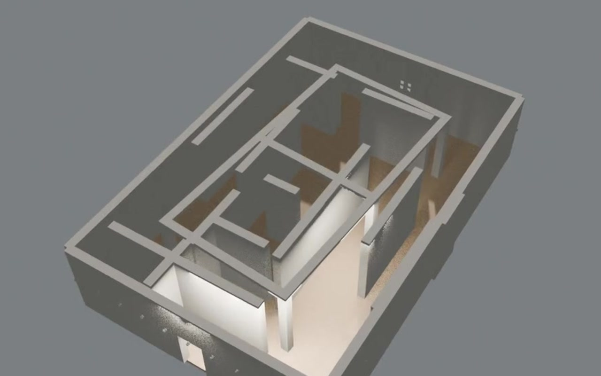
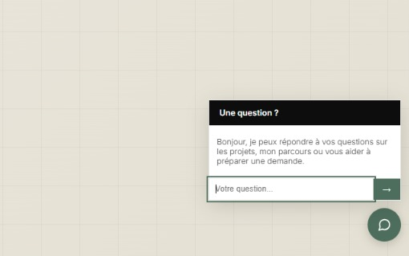
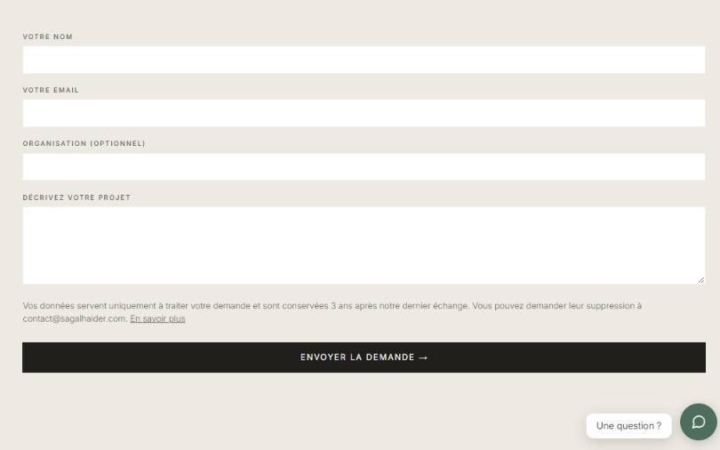
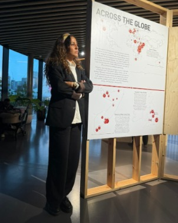

Bringing vanished heritage back to life through rigorous 3D archaeological restitution.
Features
A platform where archaeological data becomes explorable 3D restitutions, built for archaeologists, heritage institutions and documentary makers.

Browse restitutions of historic buildings and sites, such as the 13th-century Fakhr ad-Din mosque in Mogadishu or the Aksumite basilica of Beta Samati, shown here without its roof to reveal the interior. Every model is grounded in field surveys, photogrammetry and archival research, not guesswork.

A built-in chatbot answers questions about the sites, the methods and the services. It replies from the project's own content first, and falls back on a language model when needed.

Archaeology operators and production companies can submit a restitution request online. Requests land in an admin dashboard where they are tracked from first contact to delivery.
About
Built with Django, tested with pytest, deployed with GitHub Actions on an Ubuntu VPS behind nginx.

I spent ten years as a carpenter, then became a building archaeologist, with fieldwork in Zanzibar, Mogadishu and Occitanie. Today I am a web developer trained at Holberton School Paris, heading toward cybersecurity.
Why I built Restituo
During my master's degree I documented the Fakhr ad-Din mosque in Mogadishu with photogrammetry and 3D modelling. I saw how much heritage in East Africa is disappearing without ever being recorded, and how rarely it is shown without clichés. Restituo is the tool I wished I had: a place where serious archaeological restitution meets the web, so that this heritage can be seen, studied and shared.
I built it on my own, taking on every role: project management, development, testing and deployment.
Try it